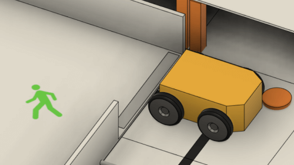

{{'line.view.info' | translate}}
| {{'common.competition' | translate}} | {{competition}} |
|---|---|
| {{'common.round' | translate}} | {{round}} |
| {{'common.field' | translate}} | {{field}} |
| {{'common.team' | translate}} | {{team}} |
| {{'common.league' | translate}} | {{league}} |
| {{'common.rule' | translate}} | 2026 |
{{'common.lops' | translate}}
{{$index==0?'line.judge.start':'line.judge.checkpoint'|translate}}{{$index==0?'':$index}}
{{!$last?'line.judge.checkpoint':'line.judge.Lexit' | translate}}{{!$last?$index+1:''}}
{{!$last?'line.judge.checkpoint':'line.judge.Lexit' | translate}}{{!$last?$index+1:''}}
{{LoPs[$index]?LoPs[$index]:0}}
{{'common.stotal' | translate}} : {{raw_score - checkTotal() - exitBonusPoints()}} {{'common.point' |translate}}
{{'line.sign.checkPointScore' | translate}}
{{'line.view.start'|translate}}
{{'line.view.checkpoint'|translate}}{{$index==0?'':$index}}
{{'line.view.goal'|translate}}
{{cp.dis}} {{'common.tile' | translate}} {{LoPs[$index-1]}} {{'common.times' | translate}}
{{cp.point}} {{'common.point' | translate}}
{{'common.stotal' | translate}}
{{checkTotal()}} {{'common.point' | translate}}
{{'line.sign.exitBonus' | translate}}


Base points
{{sum(LoPs)}} × -5 {{'common.point' | translate}}
{{'line.sign.exitBonus' | translate}}
{{exitBonus?60:0}} {{'common.point' | translate}}
-
{{(exitBonus?60:0) - exitBonusPoints()}} {{'common.point' | translate}}
=
{{exitBonusPoints()}} {{'common.point' | translate}}
{{'common.stotal' | translate}}
{{'line.sign.item' | translate}}
{{raw_score - checkTotal() - exitBonusPoints()}} {{'common.point' | translate}}
+
{{'line.sign.checkPointScore' | translate}}
{{checkTotal()}} {{'common.point' | translate}}
+
{{'line.sign.exitBonus' | translate}}
{{ exitBonusPoints()}} {{'common.point' | translate}}
=
{{raw_score}} {{'common.point' | translate}}
{{'line.sign.rescue' | translate}}


{{calc_victim_type_lop_multiplier(0)}} - (x0.05 ×{{LoPs[EvacuationAreaLoPIndex]}}times )
{{calc_victim_type_lop_multiplier()}} /victim
| Zone | {{j*(rcjCorregirBugsVisuales?3:4) + (i+1)}} |
|---|---|
 | x{{calc_victim_multipliers(j*3+i)}} |
 | x{{calc_victim_multipliers(j*3+i)}} |
{{'common.multipliers' | translate}}
x{{multiplier}}
{{'line.sign.calc' | translate}}
{{'common.stotal' | translate}}
{{raw_score}} {{'common.point' | translate}}
×
{{'common.multipliers' | translate}}
{{multiplier}}
=
{{'common.score' | translate}}
{{score}} {{'common.point' | translate}}
: {{score}} {{'common.point' | translate}} : {{normalizedScore}}
: {{score}} {{'common.point' | translate}} : {{normalizedScore}}
: {{minutes}} {{'common.min' | translate}} {{seconds}} {{'common.sec' | translate}}
: {{minutes}} {{'common.min' | translate}} {{seconds}} {{'common.sec' | translate}}